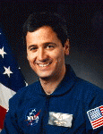

Lyndon B. Johnson Space Center
Houston, Texas 77058
|
National Aeronautics and Space Administration Lyndon B. Johnson Space Center Houston, Texas 77058 |
 |
Biographical Data |
||
Lawrence J. DeLucas (O. D., Ph.D.)
Payload Specialist
PERSONAL DATA: Born July 11, 1950, Syracuse, New York. Married and has three children. Recreational interests include basketball, scuba diving, model airplanes, astronomy and reading.
EDUCATION: Bachelor of science degree and master of science degree in chemistry, University of Alabama at Birmingham (UAB), Birmingham, Alabama, 1972 and 1974, respectively; bachelor of science degree in physiological optics, UAB, Birmingham, Alabama, 1979; doctorate in optometry in 1981; doctorate in biochemistry, UAB, Birmingham, Alabama, 1982.
ORGANIZATIONS: Dr. DeLucas is a member of the American Crystallographic Association, American Academy of Optometry, American Institute of Aeronautics and Astronautics, Alabama Optometric Association, American Association of Pharmaceutical Scientists, National Aeronautic Association, Biotechnology Industry Organization, Biotechnology Association of Alabama, and the Helen Keller Eye Research Foundation.
PUBLICATIONS: He has published over 104 research articles in refereed scientific journals, is co-author of 2 books, and co-inventor on 25 patents.
SPECIAL HONORS: Co-Chair, Spacehab Science Advisory Board; Secretary of the Board, Council of Biotechnology Centers, Biotechnology Industry Council; Distinguished Faculty Lecturer, UAB; Howell Heflin Statesmanship Award for Technology, NASA Space Flight Medal; Recognized as one of the scientists who could shape the 21st century in an article by The Sunday Times of London entitled “The Brains Behind the 21st Century”; Distinguished Crystallography Lecturer for Pittsburgh Diffraction Society Lecturers; Honorary Doctor of Science degree, Ohio State University, Illinois College of Optometry, State University of New York State College of Optometry, and Ferris State University, Big Rapids, MI.
EXPERIENCE: Research Associate in the Institute of Dental Research, UAB, 1975-1976; Graduate Student, 1977-1982 working on combined doctoral degrees in Optometry and Biochemistry; Member of Vision Science Research Center, 1982-present; Member, Graduate Faculty, UAB, 1983-present; Scientist, Comprehensive Cancer Center, UAB, 1984-present; Adjunct Professor, Materials Science, University of Alabama at Huntsville, University of Alabama at Birmingham, University of Alabama, 1989-present; NASA Chief Scientist for International Space Station , 1994-1995; Member of NASA Science Advisory Committee for Advanced Protein Crystal Growth, 1987-present; Adjunct Professor, Laboratory of Medical Genetics, UAB, 1990-present; Adjunct Professor, Department of Biochemistry, UAB, 1990-present; Member, Executive Committee and Board of the Helen Keller Eye Research Foundation, 1990-present; Professor, Department of Optometry, UAB, 1989-present; Associate Director, Center for Macromolecular Crystallography, UAB, 1986-1992; Director, Center for Biophysical Sciences and Engineering, UAB, 1994-present; Member, Media Relations Group, UAB, 1997-present; Director, Cancer Center X-ray Core Facility, UAB, 1994-present; Adjunct Professor, Physiology and Biophysics, 2001-present; Member Metabiolic Bone Disease, UAB, 1996-present; and Member Research Foundation and Technology Transfer Committee, UAB 1997-1998.
SPACE FLIGHT EXPERIENCE: Dr. DeLucas was a member of the crew of Space Shuttle Columbia for STS-50 (June 25-July 9, 1992), the United States Microgravity Laboratory-1 (USML-1) Spacelab mission. Over a two-week period, the crew conducted a wide variety of experiments relating to materials processing and fluid physics. At mission conclusion, Dr. DeLucas had traveled over 5.7 million miles in 221 Earth orbits, and had logged over 331 hours in space.
NOVEMBER 2001
This is the only version available from NASA. Updates must be sought direct from the above named individual.
{kind=link}